14 country crests. 29 city badges. Aero and Diamond Beacons, wherever you explore.
Country crests feature a representative landmark. City badges feature their own skyline. Each is shown on dark and light.
Country badge · Atomium
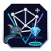
City badge · Atomium
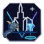
City badge · Cathedral of Our Lady
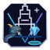
City badge · Belfry of Bruges
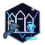
Country badge · Canal houses
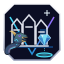
City badge · Canal houses
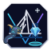
City badge · Erasmus Bridge
Country badge · Elizabeth Tower
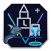
City badge · Elizabeth Tower
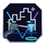
City badge · Edinburgh Castle
Country badge · Eiffel Tower
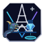
City badge · Eiffel Tower
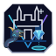
City badge · Fourviere Basilica
Country badge · Brandenburg Gate
City badge · Brandenburg Gate
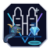
City badge · Frauenkirche
Country badge · Colosseum
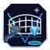
City badge · Colosseum
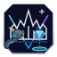
City badge · Milan Cathedral
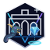
Country badge · Puerta de Alcala
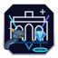
City badge · Puerta de Alcala
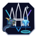
City badge · Sagrada Familia
Country badge · Belem Tower
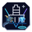
City badge · Belem Tower
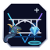
City badge · Dom Luis I Bridge
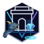
Country badge · India Gate
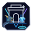
City badge · India Gate
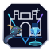
City badge · Gateway of India
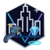
Country badge · Empire State Building
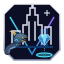
City badge · Empire State Building
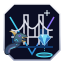
City badge · Golden Gate Bridge
Country badge · Christ the Redeemer
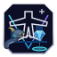
City badge · Christ the Redeemer
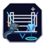
City badge · Sao Paulo Museum of Art
Country badge · Temple of Heaven
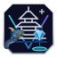
City badge · Temple of Heaven
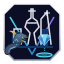
City badge · Oriental Pearl Tower
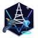
Country badge · Tokyo Tower
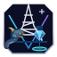
City badge · Tokyo Tower
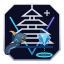
City badge · Toji Pagoda
Country badge · Wat Arun
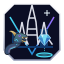
City badge · Wat Arun
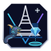
City badge · Doi Suthep